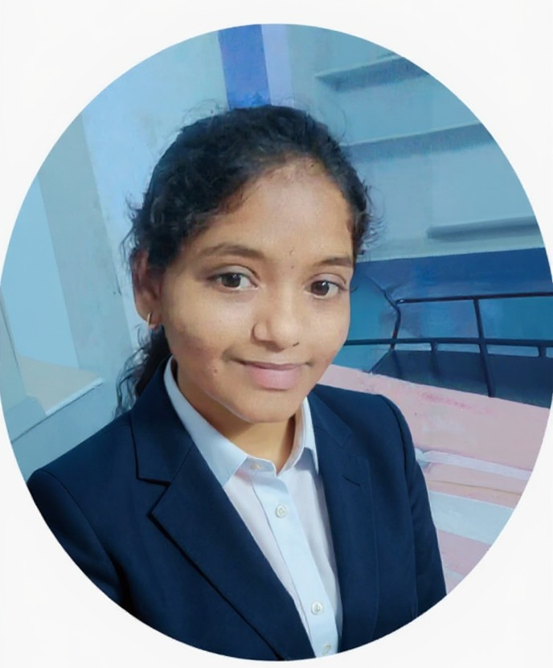

Final-year Data Science student and AI Engineering Intern who builds machine learning systems, computer vision applications, and IoT-connected hardware — from Django backends to real-time devices that act on live data.
I'm a final-year Data Science student with a solid foundation in Python, SQL, and Java, and hands-on experience across data analysis, visualization, and applied machine learning.
I'm currently an AI Engineering Intern at CTRLS-DeepForrest.ai, working on Harmony — an AI-powered dossier generation platform — where I fix frontend and backend issues, and work with FastAPI, Pydantic, and LLM prompt engineering. Earlier, I completed a Data Science internship at Infosys Springboard building Power BI dashboards for sales analysis.
Outside of internships, I build end-to-end projects: Django ML web apps, CNN-based computer vision systems, and IoT devices that combine Python, Arduino, and live sensor data to automate physical hardware. Open to freelance and contract work in machine learning, data analysis, and Python development.
Real teams, real codebases.
The languages, frameworks, and tools behind the projects below.
A mix of AI/ML, full-stack, and hardware-integrated builds.
Built to protect market yard produce from adverse weather. Automates dome operations using real-time rainfall and humidity data from a weather API, cutting down manual intervention. Won 1st place among 20+ teams at Project Expo, VNITSW.
Monitors face mask compliance in real time. A CNN-based system using MobileNetV2 classifies masked vs. unmasked faces from live video, enabling automated access control through IoT integration.
A Django web application that integrates News API to display real-time news and manages user data through an admin dashboard. A Logistic Regression model predicts customer churn, helping admins identify and retain at-risk subscribers.
An AI-powered trip planning platform that turns a natural-language prompt into a full itinerary — flights, hotels, and day-by-day plans — with authenticated accounts and shareable community trip plans.
Open to freelance and contract work in machine learning, data analysis, and Python development. Reach out and let's talk about your project.